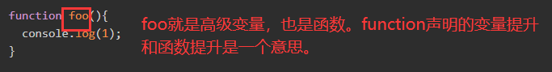
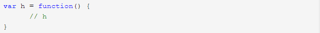
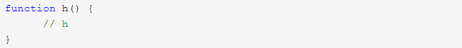

js常量、变量、函数的声明
js常量的两种声明方式
1. 用const声明常量：
const声明一个只读的常量。一旦声明，常量的值就不能改变。
if (true) {
const MAX = 5;}
MAX // Uncaught ReferenceError: MAX is not defined
上面代码表明改变常量的值会报错。
const的作用域与let命令相同：只在声明所在的块级作用域内有效。
if (true) {
const MAX = 5;
}
MAX // Uncaught ReferenceError: MAX is not defined
const命令声明的常量也是不提升，同样存在暂时性死区，只能在声明的位置后面使用。
if (true) {
console.log(MAX); // ReferenceError
const MAX = 5;
}
上面代码在常量MAX声明之前就调用，结果报错。
const声明的常量，也与let一样不可重复声明。
var message = "Hello!";
let age = 25;
// 以下两行都会报错
const message = "Goodbye!";
const age = 30;
2.用var声明常量：
没什么特殊的，全局常量。
js变量的四种声明方式
1.用var声明变量：
var声明的变量是全局变量。
2.用let声明变量：
for循环的计数器，就很合适使用let命令。
for (let i = 0; i < 10; i++) {
// ...
}
console.log(i);
// ReferenceError: i is not defined
上面代码中，计数器i只在for循环体内有效，在循环体外引用就会报错。
下面的代码如果使用var，最后输出的是10。
var a = [];
for (var i = 0; i < 10; i++) {
a[i] = function () {
console.log(i);
};
}
a[6](); // 10
上面代码中，变量i是var命令声明的，在全局范围内都有效，所以全局只有一个变量i。每一次循环，变量i的值都会发生改变，而循环内被赋给数组a的函数内部的console.log(i)，里面的i指向的就是全局的i。也就是说，所有数组a的成员里面的i，指向的都是同一个i，导致运行时输出的是最后一轮的i的值，也就是 10。
如果使用let，声明的变量仅在块级作用域内有效，最后输出的是 6。
var a = [];
for (let i = 0; i < 10; i++) {
a[i] = function () {
console.log(i);
};
}
a[6](); // 6
上面代码中，变量i是let声明的，当前的i只在本轮循环有效，所以每一次循环的i其实都是一个新的变量，所以最后输出的是6。你可能会问，如果每一轮循环的变量i都是重新声明的，那它怎么知道上一轮循环的值，从而计算出本轮循环的值？这是因为 JavaScript 引擎内部会记住上一轮循环的值，初始化本轮的变量i时，就在上一轮循环的基础上进行计算。
3.用const声明变量：
const声明的变量不得改变值，这意味着，const一旦声明变量，就必须立即初始化，不能留到以后赋值。
const foo;
// SyntaxError: Missing initializer in const declaration
上面代码表示，对于const来说，只声明不赋值，就会报错。
const声明常数和变量的本质：
const实际上保证的，并不是变量的值不得改动，而是变量指向的那个内存地址所保存的数据不得改动。对于简单类型的数据（数值、字符串、布尔值），值就保存在变量指向的那个内存地址，因此等同于常量。但对于复合类型的数据（主要是对象和数组），变量指向的内存地址，保存的只是一个指向实际数据的指针，const只能保证这个指针是固定的（即总是指向另一个固定的地址），至于它指向的数据结构是不是可变的，就完全不能控制了。因此，将一个对象声明为常量必须非常小心。
const foo = {};
// 为 foo 添加一个属性，可以成功
foo.prop = 123;
foo.prop // 123
// 将 foo 指向另一个对象，就会报错
foo = {}; // TypeError: "foo" is read-only
上面代码中，常量foo储存的是一个地址，这个地址指向一个对象。不可变的只是这个地址，即不能把foo指向另一个地址，但对象本身是可变的，所以依然可以为其添加新属性。
下面是另一个例子。
const a = [];
a.push('Hello'); // 可执行
a.length = 0; // 可执行
a = ['Dave']; // 报错
上面代码中，常量a是一个数组，这个数组本身是可写的，但是如果将另一个数组赋值给a，就会报错。
如果真的想将对象冻结，应该使用Object.freeze方法。
const foo = Object.freeze({});
// 常规模式时，下面一行不起作用；
// 严格模式时，该行会报错
foo.prop = 123;
上面代码中，常量foo指向一个冻结的对象，所以添加新属性不起作用，严格模式时还会报错。
除了将对象本身冻结，对象的属性也应该冻结。下面是一个将对象彻底冻结的函数。
var constantize = (obj) => {
Object.freeze(obj);
Object.keys(obj).forEach( (key, i) => {
if ( typeof obj[key] === 'object' ) {
constantize( obj[key] );
}
});
};
4.用function声明变量：
在ES2015之前，声明变量只有var 和 function 这两个关键字，var 用于声明普通变量，function用于声明函数或者方法（高级变量，方法和函数的区别在下面），因此function声明变量和function声明函数是一个意思，所以这部分内容放在了function声明函数里。
同时var声明的变量和function声明的变量会有变量提升的问题。函数提升在前，变量提升在后。也就是function声明的变量在上面，var声明的变量在它的下面。
方法（method）和函数（function）的区别：
1）函数是一段代码，通过名字来进行调用。它能将一些数据（参数）传递进去进行处理，然后返回一些数据（返回值），也可以没有返回值。
所有传递给函数的数据都是显式传递的。函数和对象无关。
2）方法也是一段代码，也是通过名字来进行调用，但它跟一个对象相关联。方法和函数大致上是相同的，但有两个主要的不同之处：
方法中的数据是隐式传递的；方法和对象相关。
方法可以操作类内部的数据（请记住，对象是类的实例化–类定义了一个数据类型，而对象是该数据类型的一个实例化）
方法（method）是通过对象调用js函数。也就是说，方法也是函数，只是比较特殊的函数。
当将函数和对象和写在一起时，函数（function）就变成了方法（method）。有对象时的函数成为方法，无对象时的函数称为方法。
js函数的两种声明方式
1.用var声明函数
此操作是把函数赋值给刚声明的h。 函数只有在var语句声明之后才能被调用，这种写法导致只能在这个函数下面写的代码才能调用此函数。
2.用function声明函数
函数可以在function声明之前被调用，这种写法可以使在这个函数上面写的代码就可以调用此函数。
3.用Function()构造器声明函数
不推荐这种用法, 容易出问题
本作品采用 知识共享署名-非商业性使用-禁止演绎 4.0 国际许可协议 进行许可。